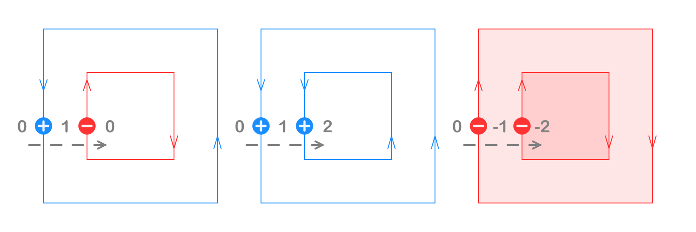
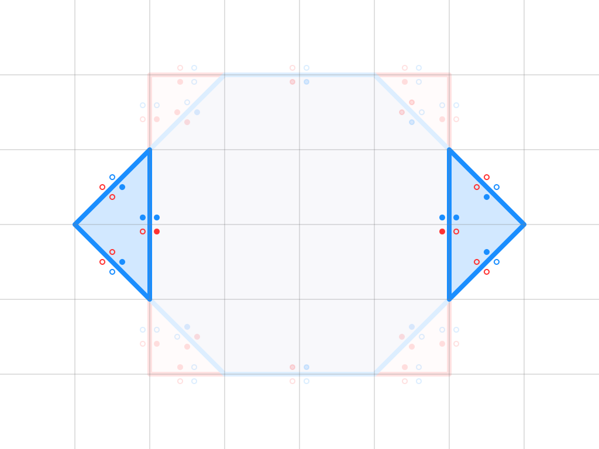
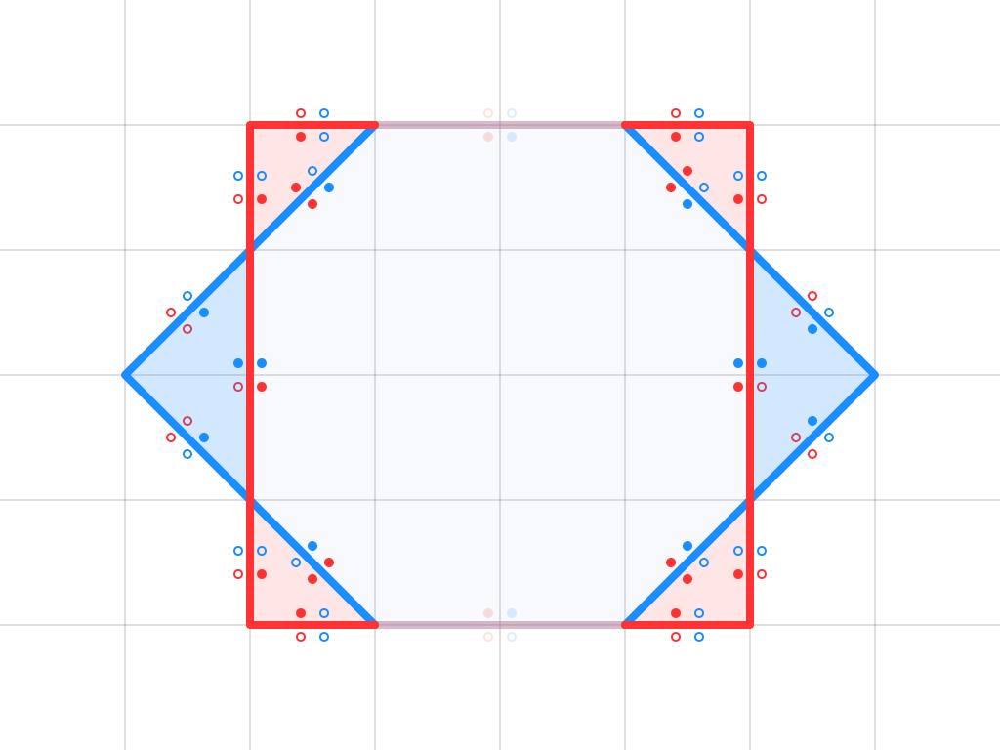

iOverlay

Introduction
- The iOverlay is a poly-bool library that supports main operations such as union, intersection, difference, xor, and self-intersection.
Features
- Operations: union, intersection, difference, and exclusion.
- Polygons: with holes, self-intersections, and multiple paths.
- Simplification: removes degenerate vertices and merges collinear edges.
- Buffering: offsets paths and polygons.
- Fill Rules: even-odd, non-zero, positive and negative.
Source Code
- Rust Version: iShape-Rust/iOverlay
- JS Version: iShape-Rust/iShape-js
Overlay Editor
Your browser does not support WebGPU.
Please use a WebGPU-supported browser, such as the latest version of Chrome.
Performance Comparison
Benchmark project is here.
All tests were run on a machine with the following specifications:
3 GHz 6-Core Intel Core i5, 40GB 2667 MHz DDR4
All results are presented in seconds.
Solvers:
- iOverlay(Rust) v1.9.0 (multithreading on/off)
- iOverlay(Swift) v1.13.0
- Clipper2(C++) v1.4.0
- Boost(C++) v1.86.0
Checkerboard Test

| Squares | Swift | Rust (mt off) | Rust (mt on) | Clipper2 | Boost |
|---|---|---|---|---|---|
| 5 | 0.000014 | 0.000006 | 0.000006 | 0.000007 | 0.000045 |
| 25 | 0.000100 | 0.000036 | 0.000036 | 0.000038 | 0.000595 |
| 113 | 0.000589 | 0.000197 | 0.000196 | 0.000208 | 0.004446 |
| 481 | 0.004105 | 0.001117 | 0.001117 | 0.001017 | 0.060791 |
| 1985 | 0.012643 | 0.004914 | 0.004935 | 0.005182 | 1.103624 |
| 8065 | 0.055664 | 0.020674 | 0.019785 | 0.024013 | 21.080339 |
| 32513 | 0.234840 | 0.091871 | 0.083285 | 0.154054 | 412.630289 |
| 130561 | 0.993920 | 0.424643 | 0.372978 | 1.067439 | ---- |
| 523265 | 4.410302 | 2.043570 | 2.008339 | 8.346041 | ---- |
| 2095105 | 18.451646 | 9.291384 | 7.936810 | 73.312335 | ---- |
| 8384513 | 78.719305 | 38.639666 | 33.742216 | 644.337867 | ---- |
Not Overlap Test

| Squares | Swift | Rust (mt off) | Rust (mt on) | Clipper2 | Boost |
|---|---|---|---|---|---|
| 5 | 0.000009 | 0.000003 | 0.000003 | 0.000005 | 0.000003 |
| 25 | 0.000041 | 0.000012 | 0.000011 | 0.000021 | 0.000021 |
| 113 | 0.000204 | 0.000061 | 0.000062 | 0.000097 | 0.000223 |
| 481 | 0.001052 | 0.000346 | 0.000344 | 0.000457 | 0.002621 |
| 1985 | 0.004978 | 0.001679 | 0.001668 | 0.002114 | 0.036257 |
| 8065 | 0.021336 | 0.005912 | 0.005425 | 0.010783 | 0.558494 |
| 32513 | 0.089523 | 0.028454 | 0.024718 | 0.056281 | 8.852867 |
| 130561 | 0.375594 | 0.127448 | 0.107485 | 0.369146 | 146.041905 |
| 523265 | 1.663087 | 0.635898 | 0.538060 | 2.695334 | ---- |
| 2095105 | 6.947932 | 2.708549 | 2.470210 | 20.665812 | ---- |
| 8384513 | 28.777569 | 13.514846 | 9.601191 | 167.966801 | ---- |
Lines Net Test

| Squares | Swift | Rust (mt off) | Rust (mt on) | Clipper2 | Boost |
|---|---|---|---|---|---|
| 4 | 0.000014 | 0.000004 | 0.000004 | 0.000004 | 0.000014 |
| 8 | 0.000049 | 0.000014 | 0.000014 | 0.000012 | 0.000054 |
| 16 | 0.000195 | 0.000049 | 0.000050 | 0.000043 | 0.000370 |
| 32 | 0.001295 | 0.000195 | 0.000196 | 0.000176 | 0.003175 |
| 64 | 0.004994 | 0.001013 | 0.001016 | 0.000749 | 0.055749 |
| 128 | 0.021239 | 0.004046 | 0.003970 | 0.003441 | 23.531991 |
| 256 | 0.091427 | 0.018815 | 0.020870 | 0.018417 | 412.528984 |
| 512 | 0.255989 | 0.088601 | 0.096745 | 0.115229 | ---- |
| 1024 | 1.146842 | 0.417128 | 0.397470 | 0.759640 | ---- |
| 2048 | 4.808548 | 1.844754 | 1.537385 | 5.595165 | ---- |
| 4096 | 20.190101 | 7.514548 | 7.696920 | 45.934461 | ---- |
Spiral Test
 * There is now boost results for this test
* There is now boost results for this test
| Squares | Swift | Rust (mt off) | Rust (mt on) | Clipper2 |
|---|---|---|---|---|
| 2 | 0.000006 | 0.000002 | 0.000002 | 0.000002 |
| 4 | 0.000010 | 0.000005 | 0.000005 | 0.000004 |
| 8 | 0.000019 | 0.000009 | 0.000009 | 0.000007 |
| 16 | 0.000040 | 0.000020 | 0.000020 | 0.000014 |
| 32 | 0.000095 | 0.000048 | 0.000048 | 0.000031 |
| 64 | 0.000218 | 0.000129 | 0.000127 | 0.000083 |
| 128 | 0.000490 | 0.000304 | 0.000305 | 0.000202 |
| 256 | 0.001105 | 0.000668 | 0.000669 | 0.000476 |
| 512 | 0.003385 | 0.001599 | 0.001606 | 0.001195 |
| 1024 | 0.006174 | 0.003572 | 0.003560 | 0.002941 |
| 2048 | 0.013200 | 0.005000 | 0.004930 | 0.007578 |
| 4096 | 0.026065 | 0.009576 | 0.009528 | 0.020287 |
| 8192 | 0.055944 | 0.017583 | 0.018779 | 0.054647 |
| 16384 | 0.112375 | 0.040145 | 0.040263 | 0.181050 |
| 32768 | 0.237412 | 0.076642 | 0.076609 | 0.606854 |
| 65536 | 0.473847 | 0.181912 | 0.181387 | 2.013809 |
| 131072 | 0.981729 | 0.343917 | 0.331046 | 6.547658 |
| 262144 | 1.979541 | 0.781770 | 0.833816 | 21.171540 |
| 524288 | 4.101912 | 1.417144 | 1.472624 | 72.147615 |
| 1048576 | 8.254108 | 3.188509 | 3.232834 | 259.866180 |
Windows Test

| Squares | Swift | Rust (mt off) | Rust (mt on) | Clipper2 | Boost |
|---|---|---|---|---|---|
| 8 | 0.000016 | 0.000006 | 0.000006 | 0.000008 | 0.000006 |
| 32 | 0.000062 | 0.000021 | 0.000021 | 0.000028 | 0.000037 |
| 128 | 0.000276 | 0.000096 | 0.000097 | 0.000112 | 0.000266 |
| 512 | 0.001306 | 0.000519 | 0.000516 | 0.000507 | 0.002482 |
| 2048 | 0.005543 | 0.001675 | 0.001548 | 0.002454 | 0.030949 |
| 8192 | 0.023805 | 0.007519 | 0.006780 | 0.012364 | 0.448009 |
| 32768 | 0.104822 | 0.038832 | 0.034149 | 0.076850 | 7.013886 |
| 131072 | 0.445712 | 0.192338 | 0.159685 | 0.568316 | 109.745463 |
| 524288 | 1.862371 | 0.835050 | 0.703147 | 4.142673 | ---- |
| 2097152 | 7.657815 | 3.761808 | 3.182362 | 33.165570 | ---- |
| 8388608 | 30.833973 | 15.476744 | 12.058687 | 265.387333 | ---- |
Nested Squares Test
| Squares | Swift | Rust (mt off) | Rust (mt on) | Clipper2 | Boost |
|---|---|---|---|---|---|
| 4 | 0.000022 | 0.000009 | 0.000009 | 0.000012 | 0.000153 |
| 8 | 0.000045 | 0.000017 | 0.000017 | 0.000023 | 0.000387 |
| 16 | 0.000098 | 0.000035 | 0.000034 | 0.000050 | 0.000792 |
| 32 | 0.000238 | 0.000081 | 0.000081 | 0.000118 | 0.001757 |
| 64 | 0.000624 | 0.000210 | 0.000217 | 0.000291 | 0.004145 |
| 128 | 0.001853 | 0.000594 | 0.000608 | 0.000806 | 0.010646 |
| 256 | 0.002398 | 0.001992 | 0.002016 | 0.003415 | 0.036101 |
| 512 | 0.005013 | 0.002555 | 0.002641 | 0.015989 | 0.141906 |
| 1024 | 0.016067 | 0.007851 | 0.005925 | 0.081267 | 0.560183 |
| 2048 | 0.033194 | 0.024523 | 0.018777 | 0.461883 | 2.425802 |
| 4096 | 0.150601 | 0.060516 | 0.044756 | 2.347209 | 11.419096 |
| 8192 | 0.311691 | 0.245160 | 0.165539 | 10.612424 | 49.299261 |
| 16384 | 0.752357 | 0.485605 | 0.331655 | 46.205474 | 206.646450 |
| 32768 | 2.581991 | 1.814993 | 1.148905 | 251.260857 | ---- |
| 65536 | 10.368794 | 4.031631 | 2.197493 | 3502.233611 | ---- |
| 131072 | 23.250746 | 15.731705 | 8.194153 | ---- | ---- |
| 262144 | 48.529555 | 30.809760 | 15.285741 | ---- | ---- |
Filling Rules
Even-Odd

Non-Zero
Positive

Negative

Filling Rules:
- Even-Odd: Only odd numbered sub-regions are filled
- Non-Zero: Only non-zero sub-regions are filled
- Positive: Only positive sub-regions are filled
- Negative: Only negative sub-regions are filled
Overlay Rules

Union, A or B

Intersection, A and B
Difference, A - B

Inverse Difference, B - A

Exclusion, A xor B

Contours
Outer and Inner
In the context of the Overlay Graph, contours are used to represent the boundaries of geometric objects. These contours are classified into two types: outer contours and inner contours.
Outer Contour:
- An outer contour is a sequence of points ordered in a counterclockwise direction.
- The outer contour defines the external boundary of a shape, enclosing the exterior space.
Inner Contour (Hole or Cave):
- An inner contour is a sequence of points ordered in a clockwise direction.
- Inner contours represent enclosed areas within an outer contour, often referred to as "holes" or "caves."
Both outer and inner contours must be simple, meaning they must not self-intersect and must not share edges with other contours.
Overlay Graph
An Overlay Graph is a data structure representing the intersections and overlays of two geometric objects (A and B) defined by closed contours in 2D space.
The graph is constructed by dividing all the segments of the object contours into non-intersecting parts, where segments can only touch at their endpoints. Each segment in the graph contains the following properties:
- For each side of the segment, it stores information about its membership to object A and object B
- Segments do not intersect each other, but they may touch at their endpoints.
for more Overlay Graph examples see Shape Editor
Filter Segments
Difference, C = A - B
The resulting segments of C must not be inside body B and must belong to body A on one side.
The side associated solely with body A will represent the inner part of the resulting shape.

Difference, C = B - A
The resulting segments of C must not be inside body A and must belong to body B on one side.
The side associated solely with body B will represent the inner part of the resulting shape.

Union, C = A or B
The resulting segments of C must belong to either body A or body B, or to both. The opposite side of each segment must not belong to anybody.
The side associated with one of the bodies will represent the inner part of the resulting shape.

Intersection, C = A and B
The resulting segments of C must belong to both bodies A and B. The opposite side of each segment must not belong to both bodies simultaneously.
The side associated with both bodies A and B will represent the inner part of the resulting shape.
Exclusion, C = A xor B
The resulting segments of C must belong to either body A or body B, but not to both simultaneously. The opposite side of each segment must either belong to both bodies or to neither.
The side associated with one of the bodies (A or B) will represent the inner part of the resulting shape.

Extract Shapes
Once we apply boolean filter to Overlay Graph, we can begin extract contours.
Build Contour
Outer Contour

Inner Contour

The algorithm starts by selecting the leftmost node and proceeds by choosing the topmost segment connected to that node. The process continues by traversing to the next node along the selected segment.
At each node, the algorithm selects the next segment by rotating around the current node in a clockwise/counterclockwise direction for inner/outer contours and taking the first nearest segment.
To prevent segments from being visited twice, each segment is marked as visited upon traversal.
This process continues until the contour is complete, forming either an outer or inner contour.
By following this approach, outer contours are extracted in a clockwise direction, while inner contours are extracted in a counterclockwise direction.
Define Contour
To define a contour, the algorithm begins by identifying the leftmost and topmost segment in the contour. The classification of the contour is determined as follows:
- If the left-top side of the segment is classified as the outer side, then the contour is an outer contour.
- If the left-top side of the segment is classified as the inner side, then the contour is an inner contour.
This method ensures each contour is correctly classified based on its orientation in 2D space.
Define Shape

A shape is defined as a group of contours, where the first contour is always an outer contour, and the subsequent contours (if any) are inner contours.
Matching Contours
 To match inner contours to their corresponding outer contours:
To match inner contours to their corresponding outer contours:
- Draw a line downward from any point on the inner (target) contour.
- Identify the first segment encountered along the line that does not belong to the target contour.
- If the segment belongs to an outer contour, that contour is the container for the target contour.
- If the segment belongs to another inner contour, the container of that inner contour is also the container for the target contour.
Define Segment under Point
Segment under Point

To determine whether a segment AB is below a point P, one may be tempted to compute the value of ym at the point of intersection M, where a vertical line is dropped from P onto AB (i.e., xp = xm):
$$ y_{m} = \frac{y_{a} - y_{b}}{x_{a} - x_{b}}\cdot(x_{m} - x_{a}) + y_{a} $$
However, this approach can introduce precision issues due to the division involved.
A more reliable method involves using the order of traversal around the vertices of the triangle APB. If segment AB is below point P, the vertices A, P, and B will appear in a clockwise order.
This method uses the cross product of vectors PA and PB:
$$ a \times b = a_x b_y - a_y b_x $$
Since this method avoids division, it eliminates precision issues, making it stable for determining whether a segment is below a point.
Selecting the Closest Segment under Point
When multiple segments are positioned below point P, we need to determine which segment is the closest to P. This scenario can be divided into three distinct cases based on the configuration of the segments relative to P.
Left Case
When both segments share a common left vertex A, we check the positions of their right endpoints. If the vertices B0, B1, and A form a clockwise pattern, then AB0 is closer to P than AB1.
Right Case

When both segments share a common right vertex B, we check the positions of their left endpoints. If the vertices A0, A1, and B form a clockwise pattern, then A1B is closer to P than A0B.
Middle Case
In this case, one of the vertices (e.g., A1 or B0) lies inside the opposite segment. We use the point-segment comparison method to determine which of the segments is closer to P.
iTriangle
Introduction
- Easy way to get your triangulation!
Features
- Delaunay triangulation
- Break into convex polygons
- Support any kind of polygons
- Self-Intersection Resolving
Source Code
- Swift Version: iShape-Swift/iTriangle
- Rust Version: iShape-Rust/iTriangle
Delaunay
Click on the canvas to drag the points
What is the Delaunay Condition?
When creating a triangulation network, the Delaunay condition aims to form triangles such that their circumscribed circles do not contain any other points from the dataset. In simpler terms, it ensures that triangles are "well-shaped" rather than "skinny," making the network more balanced and useful for various applications.
If the condition \(\alpha + \beta < \pi\) holds, it implies that the point \(P\) will lie outside the circumscribed circle. This confirms that a pair of triangles satisfies the Delaunay condition.
$$ \alpha + \beta < \pi \Rightarrow \sin(\alpha + \beta) > 0 $$
$$ \sin(\alpha + \beta) = \sin(\alpha)\cos(\beta) + \cos(\alpha)\sin(\beta) $$
Calculating \(\cos(\alpha)\) and \(\sin(\alpha)\):
$$ \cos(\alpha) = \frac{\vec{a} \cdot \vec{b}}{|a||b|} = \frac{a_{x}b_{x} + a_{y}b_{y}}{|a||b|} $$
$$ \sin(\alpha) = \sqrt{1- \cos^2(\alpha)} = ... = \frac{|a_{x}b_{y} - b_{x}a_{y}|}{|a||b|} = \frac{|\vec{a} \times \vec{b}|}{|a||b|} $$
Calculating \(\cos(\beta)\) and \(\sin(\beta)\):
$$ \cos(\beta) = \frac{\vec{c} \cdot \vec{d}}{|c||d|} = \frac{c_{x}d_{x} + c_{y}d_{y}}{|c||d|} $$
$$ \sin(\beta) = \frac{|\vec{c} \times \vec{d}|}{|c||d|} = \frac{|c_{x}d_{y} - d_{x}c_{y}|}{|c||d|} $$
Final Equation:
$$ \sin(\alpha + \beta) = \frac{|a_{x}b_{y} - b_{x}a_{y}|\cdot(c_{x}d_{x} + c_{y}d_{y}) + (a_{x}b_{x} + a_{y}b_{y})\cdot|c_{x}d_{y} - c_{x}d_{y}|}{|a||b||c||d|} > 0 $$
$$ |a_{x}b_{y} - b_{x}a_{y}|\cdot(c_{x}d_{x} + c_{y}d_{y}) + (a_{x}b_{x} + a_{y}b_{y})\cdot|c_{x}d_{y} - d_{x}c_{y}| > 0 $$
Or in vector form:
$$ |\vec{a} \times \vec{b}|(\vec{c} \cdot \vec{d}) + (\vec{a} \cdot \vec{b})|\vec{c} \times \vec{d}| > 0 $$